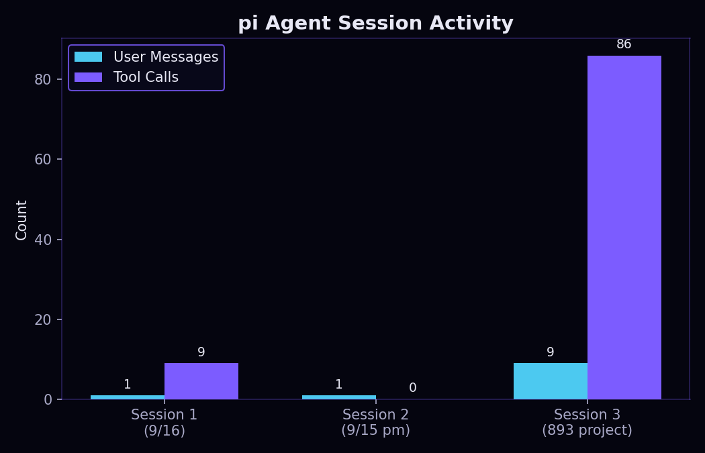

Dev Log
Notes on building this site with the pi coding agent —
what worked, what didn't, and how the session activity broke down.
Entry — Simulation vs. terrestrial prototype (TODO)
[Fill in: which path was taken — simulation or a terrestrial prototype — and how the first attempt at the anchor/extrude/advance cycle went.]
Agent session activity
Across the sessions I used to build this site, here's how the user messages I typed compared to the tool calls the agent made on its own to read, write, and test code:

Entry — Recreating a paper's simulation from scratch
Asked the agent to rebuild the simulation from Jonckers et al. (2022), “Additive Manufacturing of Large Structures Using Free-Flying Satellites” — a free-flying satellite that 3D-prints trusses longer than itself. Full write-up and plots on the Simulation page. It reproduces 16 of 16 published quantities within tolerance.
The clarify-before-build skill earned its keep immediately. Before
writing anything the agent asked six questions, and two of them changed
the build: whether to model the robotic arm's full inverse kinematics
(no — the paper treats it as an ideal follower) and how to handle
the nozzle friction the paper never quantifies. I said "just use what
they used" for friction, and it came back and told me plainly that the
paper contains no friction number at all — only
μ < 10-5 for the air bearing, which is a
different thing entirely. So it calibrated against their reported
8.42 mm outcome instead and labelled it as calibrated rather than
quietly presenting an invented number as a paper value. That is the
behaviour I wanted: pushing back instead of fabricating.
It also pushed back on my 6-DoF question. I said if the paper used 6 DoF and it was needed for the plot, we had to do it. The agent checked and said no — ELISSA is a planar air-bearing table, the paper is explicitly 3 DoF, and 6 DoF appears only as future work. Saved a large amount of pointless effort.
Two things it found that I would have missed entirely. First, the paper's Figure 5 never dimensions which way the robotic arm is mounted, but the reported error split (0.68 mm in x versus 0.28 mm in y) only works if the arm points along the body y axis, because yaw error displaces the nozzle perpendicular to the mounting offset. It had the geometry backwards at first, got a symmetric error split, and used that mismatch to diagnose the orientation. Second, it thinks Equation 3 in the paper has a transposition — the matrix inverse is on the wrong side to compose correctly — and implemented the version that actually works while documenting the discrepancy rather than silently "fixing" it.
The hypothesis property tests paid off in a way example-based tests would not have. One test asserted that nozzle friction always produces a torque; hypothesis found a counterexample where travel is parallel to the lever arm and the torque is genuinely zero — correct physics, wrong test. Another exposed a real bug: the print was accidentally centred on the free-flyer's own centre of rotation, which cancelled the 400 mm lever arm to exactly zero and silently deleted the entire effect the paper is about. The simulation had been quietly reporting errors that were far too good.
Friction point worth recording: the sandbox had no PyPI access, so
uv add pytest hypothesis failed outright. Rather than hand
me an unrunnable test suite, the agent wrote a small vendored shim
implementing just enough of both APIs to execute the real tests
unmodified, plus a runner that uses the genuine libraries when the
network allows. Same reason the figures are hand-emitted SVG instead of
matplotlib — which ended up better for the site anyway, at
5–33 KB each and perfectly scalable.
Entry — Added a "clarify before build" skill
Directly in response to the animation-coaching problem below, I wrote
a custom agent skill: .pi/skills/clarify-before-build/SKILL.md.
It tells the agent that any time I ask it to build something with a
physical or visible form — a website, an animation, a simulation,
a diagram, anything where "it works" isn't the same as "it looks/moves
right" — it must stop and ask clarifying questions about style,
layout, motion, scope, and success criteria before writing any
code, then restate the plan and get my go-ahead. The goal is to catch
mismatches in what I imagined versus what gets built at the cheapest
possible point (a question) instead of the most expensive point (a
finished but wrong animation I have to debug in words).
Entry — Getting the animation right
Found that Claude struggled taking the prompt and making something physical (the animation) using just words. It clearly understood what I wanted but need extra coaching about what was wrong to recognize and fix the mistakes. Either that or it was simply taking shortcuts. I also feel as though I'm not using the terminal in the best way. I'd like an easier way to add files and share information with the model.